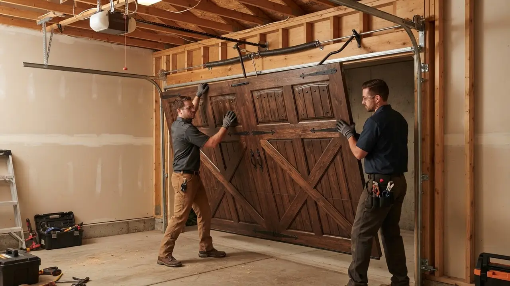

Your local team · Cool Spring
Garage Door Repair in Cool Spring Done Right the First Time
When your garage door quits, you need Garage Door Repair in Cool Spring that shows up fast and fixes it right. Delaware Express Garage Door Service has worked the row home alleys and tight driveways of Cool Spring North, Cool Spring South, and Pennsylvania Avenue for 16 years. We handle broken torsion springs, snapped cables, dead openers, and off-track doors with same-day service and upfront pricing. One call gets a licensed tech to your door.
Local knowledge
Garage Door Repair in Cool Spring You Can Count On
Garage Door Repair in Cool Spring is a different job than it is in the suburbs. The neighborhood's row home garages sit at the end of narrow alleys off Pennsylvania Avenue and Union Street, where a standard service truck barely fits and every inch of clearance matters. We have been working those alleys since 2010, and we know which blocks flood after a hard rain, which older doors have been patched three times, and which openers are on their last leg. Our techs carry the right torsion springs, galvanized steel cables, and nylon rollers on the truck so most repairs finish in one visit. Whether you need Cool Spring Garage Door Repair for a snapped cable at 6 a.m. or a garage door company Cool Spring homeowners trust for a full opener replacement, we keep it simple: we diagnose, we quote, we fix it. No runaround, no upsell.

Services available in Cool Spring
Garage Door Repair Services Available in Cool Spring
Every service we offer is built for the realities of Cool Spring: tight alleys, older doors, and weather that swings hard from January to July. If you have been searching for Garage Door Repair in Cool Spring near me and want a crew that knows the neighborhood, we are it. From a quick remote reprogram to a full custom door install, we handle it all with the same upfront pricing and same-day scheduling.
01
Garage Door Repair
General repairs in Cool Spring usually mean a door that will not open, a loud grinding noise, or a panel that got backed into. We work the narrow alleys off Union Street and Jackson Street daily, so we know how to position a truck and get the door cycling smoothly again without blocking your neighbor. Most repairs finish in under two hours.
View service 02Garage Door Installation
New door installs in Cool Spring require careful measuring because many garages here are not square. We handle Clopay, Amarr, and Wayne Dalton doors and make sure the new door fits the existing opening without cutting corners. Whether you are replacing a worn-out wooden door on Pennsylvania Avenue or upgrading to an insulated steel door, we handle the full install and haul away the old one.
View service 03Garage Door Opener Repair
Opener problems in Cool Spring often trace back to power surges or worn gears. We repair LiftMaster, Chamberlain, Genie, and Craftsman openers and carry common replacement gears and logic boards on the truck. If your opener hums but does not move the door, or the remote only works from two feet away, we can diagnose and fix it in one visit.
View service 04Garage Door Opener Installation
Installing a new opener in a Cool Spring row home means working around low ceilings and old wiring. We mount and wire LiftMaster, Chamberlain, and Genie units to NEC electrical code and pair them with your existing remotes and keypad. If you want Wi-Fi control or a battery backup, we can set that up too. Most installs take three to four hours.
View service 05Garage Door Spring Repair
Broken torsion springs are our number one call in Cool Spring, especially after a cold snap. We stock springs for standard 7-foot and 8-foot doors and can usually replace both springs in about an hour. If you heard a loud bang from the garage and the door will not lift, stop using the opener and call us. We will get you back up and running the same day.
View service 06Garage Door Cable Repair
Snapped cables in Cool Spring often happen when a door comes off track or a drum fails. We replace galvanized steel cables, respool drums, and make sure the door lifts evenly on both sides. If your door is hanging crooked or you see a frayed cable, do not run the opener. Call us and we will secure the door and replace the cable before it causes more damage.
View serviceBuilt around the city
How We Execute Garage Door Repair in Cool Spring
When we roll into Cool Spring, we know we are working in tight quarters. Many of the alleys behind Pennsylvania Avenue and Union Street are barely wide enough for a truck, so we park on the street and walk our tools in. We carry a full set of tools on every call: power drill, socket wrench set, winding bars, C-clamps, tape measure, level, screwdriver set, rubber mallet, vise grips, and safety glasses. That means we can handle most repairs without a second trip. We also follow Delaware contractor license requirements and install all openers to NEC electrical code and UL 325 safety standard. If you need same day garage door repair in Cool Spring, call before noon and we will do our best to get there that afternoon. We also offer 24/7 garage door repair Cool Spring DE for emergencies, because a broken door does not wait for business hours.
Standard service trucks cannot fit down many Cool Spring alleys, which means we often park on the street and carry tools and parts to the garage. This adds time to the job and requires planning. We use compact trucks and carry tools in bags rather than large boxes. Our techs are used to working in tight spaces and can maneuver around parked cars and trash bins. We also schedule alley jobs carefully to avoid blocking neighbors.
Many Cool Spring garages still have original doors from the 1960s and 1970s. Parts for these doors can be hard to find, and the doors themselves may be unsafe. We stock a wide range of springs, rollers, and hinges for older doors. If a part is truly obsolete, we will let you know and offer a safe, affordable replacement option. We never leave a door in an unsafe condition.
Cool Spring sees frequent freeze-thaw cycles in winter, which puts extra stress on torsion springs. A spring that is already worn can snap without warning, leaving you stuck. We inspect springs on every service call and recommend replacement if they are near the end of their life. We also offer a maintenance tune-up that includes a spring check. If a spring breaks, we can usually replace it the same day.
This standard requires garage door openers to have safety features like auto-reverse and photo-eye sensors. We install and repair openers to meet UL 325, so you know your door is safe for your family and pets.
Garage door opener wiring must meet NEC code to prevent electrical hazards. We follow NEC code on every opener install and repair, and we can correct improper wiring left by others.
Common local problems
Common Garage Door Problems in Cool Spring
Broken torsion spring
Snapped cable
Opener motor failure
Door off track
Warning signs
Signs You Need Garage Door Repair in Cool Spring
A loud bang often means a torsion spring has snapped. This is a common problem in Cool Spring due to freeze-thaw cycles. Do not try to open the door; call us immediately for same-day service.
If one side of the door is higher than the other, a cable may be broken or a drum may have failed. Operating the door in this condition can cause further damage and is unsafe. We can fix it quickly.
This usually points to a stripped gear, a broken chain or belt, or a disconnected trolley. We can diagnose the issue and repair it, often on the same visit. Do not keep running the opener, as it may burn out the motor.
If you have to be right next to the door for the remote to work, the battery may be weak or the safety sensors may be misaligned. We can test the remote and sensors and fix the issue quickly.
This is usually a sign of misaligned safety sensors or a problem with the limit settings. It is a safety feature, but it can be annoying. We can adjust the sensors and get your door closing properly again.
Pricing and expectations
Pricing and Expectations for Garage Door Repair in Cool Spring
Garage door repair pricing in Cool Spring depends on the job, but we always give you a clear quote before we start. Typical 2026 pricing for common repairs ranges from $150 to $450. A standard torsion spring replacement usually runs $250 to $350. Opener repairs are often $150 to $250. If you need a new opener installed, expect $450 to $800 depending on the model and features. We do not charge extra for after-hours calls on weekends, but there is a small emergency fee for late-night calls. We accept cash, check, and all major credit cards. Our goal is to provide affordable garage door repair Cool Spring DE residents can rely on.
A simple sensor alignment costs much less than a spring replacement or a new opener install. We will tell you the price upfront so there are no surprises.
If we need to order a specialty part, it may add to the cost and time. We stock common parts on our trucks to keep costs down and speed up service.
Emergency calls after 10 p.m. may incur an additional fee. Standard business hours and weekend daytime calls are priced the same.
We know the route
Landmarks and Points of Interest in Cool Spring
We use Cool Spring's landmarks to navigate the neighborhood and give you accurate arrival times. If you are near Cool Spring Park, we know exactly where to turn. If you are by the Cool Spring Reservoir, we can find the best route. Our dispatchers are familiar with the area and can guide our techs to your door without delays.
Cool Spring Park
Cool Spring Park is a central green space in the neighborhood. We use it as a reference point when navigating to nearby streets like Jackson Street and Union Street. It helps us give you a more accurate arrival window.
Cool Spring Reservoir
The reservoir is a prominent feature in the area. If you are near the reservoir, we know the surrounding streets and can find your garage quickly. It is a helpful landmark for our techs.
Wilmington Friends School
Wilmington Friends School is a well-known school in the area. We often use it as a landmark when giving directions to our techs, especially for homes on the surrounding streets.
Trolley Square
Trolley Square is a nearby commercial and residential area that borders Cool Spring. We serve many customers in and around Trolley Square and know the streets well.
Pennsylvania Avenue commercial corridor
Pennsylvania Avenue has a mix of small businesses, shops, and restaurants. Some of these businesses have garage doors for deliveries or storage. We provide commercial garage door repair for these properties.
Pennsylvania Avenue (Route 52)
Pennsylvania Avenue is a main road that runs through Cool Spring. It provides easy access to the neighborhood from downtown Wilmington and surrounding areas.
Cool Spring service coverage
Neighborhoods We Serve in Cool Spring
We cover every corner of Cool Spring, from the row homes near Cool Spring Park to the apartments along Pennsylvania Avenue. Our techs know the streets, the alleys, and the quirks of the older garages here. If you are in one of these neighborhoods, we can be there fast.
Cool Spring NorthCool Spring SouthPennsylvania AvenueUnion Street
Delaware Express Garage Door Service3601 Old Capitol Trl A5, Wilmington, DE 19808, United States, Wilmington, Delaware
Local results
Local Case Studies and Results in Cool Spring
A homeowner on Jackson Street heard a loud bang from the garage and found the door stuck halfway open. The torsion spring had snapped.
We arrived within two hours, replaced both torsion springs with heavy-duty replacements, and lubricated the rollers and hinges. We also checked the cables and drums for damage. The door was back in service the same day. The homeowner said it ran quieter than before. Total cost was $320, including parts and labor.
A small business on Pennsylvania Avenue had a commercial roll-up door that would not close all the way, leaving the building unsecured overnight.
We diagnosed a broken cable and a bent track. We replaced the cable, straightened the track, and adjusted the door tension. We also installed a new bottom seal to keep out water. The door closed securely the same evening. The owner was relieved to have the building secure again. The repair cost $450 and took about two hours.
A landlord near Cool Spring Park had a rental property where the garage door opener motor had burned out. The tenants could not open the door manually because it was too heavy.
We installed a new LiftMaster belt-drive opener with battery backup and Wi-Fi connectivity. We also replaced the worn rollers and balanced the door so it could be opened manually if needed. The tenants were able to use the garage again the same day. The landlord appreciated the quiet operation and the backup battery for power outages. Total cost was $650 installed.
Notes from local customers
Reviews from Customers in Cool Spring
Our garage door spring broke on a Sunday morning. I called Delaware Express and they had a tech out by early afternoon. He was polite, explained what he was doing, and had the spring replaced in about an hour. The price was exactly what he quoted. I would definitely use them again.
I manage a small shop on Pennsylvania Avenue and our roll-up door stopped working. Delaware Express came out the same day and fixed the cable and track. They even adjusted the door so it closes tighter. Professional and fast. Highly recommend for commercial work.
We had a dent in our garage door from a basketball. I thought we would need a whole new door, but they were able to remove the dent and repaint the panel. It looks like new. They saved us hundreds of dollars. Great service and very honest.
Plan for the season
Seasonal Considerations for Garage Door Repair in Cool Spring
Check your weather stripping for cracks and replace it if needed. Lubricate your rollers and hinges with a silicone-based lubricant.
Test your door's balance by disconnecting the opener and lifting it halfway. If it does not stay in place, call us for a tune-up.
Clear debris from your tracks and check the bottom seal for wear. Schedule a professional tune-up to lubricate and adjust your door.
Keep your garage door lubricated and avoid using it more than necessary in extreme cold. If you hear a loud bang, call us immediately.
Nearby service areas
Nearby Cities and Service Coverage
From our base in Wilmington, we serve Cool Spring and the surrounding neighborhoods. If you are in one of these nearby areas, we can bring the same fast, reliable Garage Door Repair to your door. We cover all of New Castle County and parts of Delaware.
Before you hire
What to Ask Before Hiring a Garage Door Repair in Cool Spring
Are you licensed and insured in Delaware?
Do you offer a warranty on parts and labor?
How much will the repair cost?
Do you have experience with older garage doors?
How soon can you get here?
Trust and compliance
Trust and Local Compliance
Delaware contractor license
DASMA certification
Door & Access Systems Manufacturers Association
IDEA certification
Institute of Door Dealer Education and Accreditation
New Castle County Chamber of Commerce
Member
Better Business Bureau
Accredited Business
Most garage door repairs in Cool Spring cost between $150 and $450. A standard torsion spring replacement runs $250 to $350. Opener repairs are often $150 to $250. We give you a written quote before we start, so you know exactly what you will pay. No hidden fees.
Delaware Express Garage Door Service has been serving Cool Spring since 2010. We are licensed, insured, and have a 4.9-star average rating from local customers. We offer same-day service, upfront pricing, and a warranty on our work. Call us and see for yourself.
Yes, we offer 24/7 emergency garage door repair in Cool Spring. If your door is stuck open, off track, or unsafe, call us anytime. We prioritize emergency calls and will get a tech out as soon as possible. There is a small after-hours fee for late-night calls.
Yes, we offer same-day service if you call before noon. We keep our schedule flexible for urgent calls and can often get to your Cool Spring home the same day. We will give you a realistic arrival window, not a four-hour block.
If your spring breaks, do not try to open the door. The door is very heavy and could fall. Call us immediately for same-day service. We will replace the spring and check the cables and rollers for damage. Most spring replacements take about an hour.
Your next step is waiting
Get Garage Door Repair in Cool Spring Today
If your garage door is broken, stuck, or making strange noises, do not wait. Delaware Express Garage Door Service is ready to help. We have been serving Cool Spring for 16 years and have a 4.9-star rating. Call us now at (302) 556-5080 for same-day service or to schedule a free estimate. We are licensed, insured, and we stand behind our work.
Start with the basics
Call For Garage Door Service
Call (302) 556-5080 and tell us what your door is doing. We answer during business hours and run emergency calls after hours. Most days we can get a tech to you the same day, and we will give you a window, not a maybe.